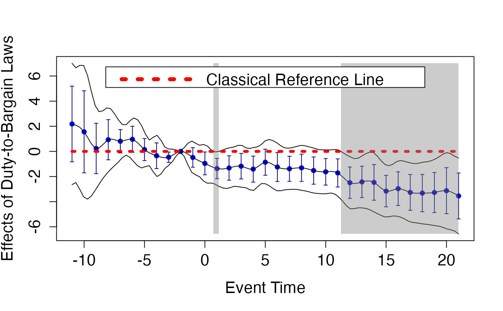
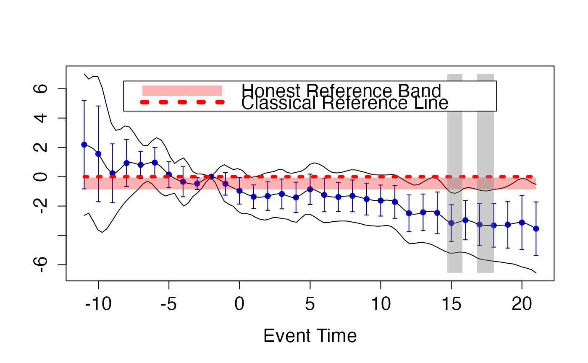
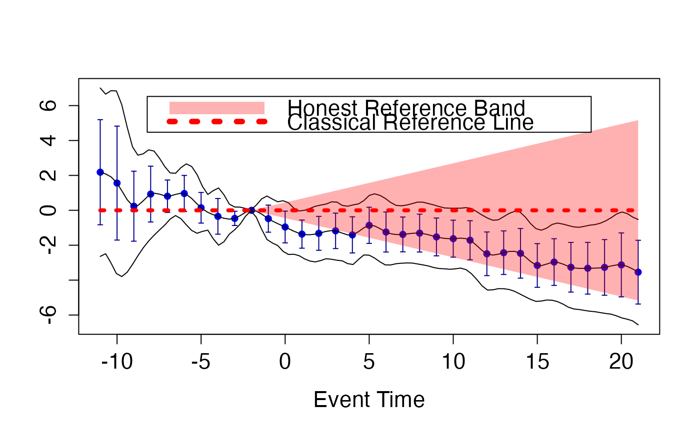

Custom plot method for objects of class "fdid_scb"
plot.fdid_scb.RdThis function is an S3 method for plot, specifically designed for objects of class "fdid_scb". It plots the simultaneous confidence bands together with honest reference band for performing honest causal inference.
Usage
# S3 method for class 'fdid_scb'
plot(
object,
ta.ts = NULL,
ta.s = NULL,
frmtr.m = NULL,
ref.band.pre = TRUE,
note.pre = TRUE,
note.post = TRUE,
ci.pre = FALSE,
ci.post = FALSE,
pos.legend = "top",
scale.legend = 1,
verbose = TRUE,
...
)Arguments
- object
an object of class
"fdid_scb". The object to be plotted.- ta.ts
a numeric value that indicates the time point based on which the sample estimates for treatment anticipation biases are computed. It should be less or equal to the time point after which units start responding to a future treatment. It is supposed to be greater than the minimal event time and no greater than t0 in
object. If it is NULL, there is no anticipation.- ta.s
a numeric vector of control parameters with length two for deriving the honest reference band under the violation of no-anticipation assumption. If NULL, the critical value \(t_{1-\alpha/2, df}\) or \(z_{1-\alpha/2}\) is applied with the same \(\alpha\) used for constructing the point-wise confidence intervals. If no treatment anticipation is defined in
ta.ts, the value ofta.sis ignored.- frmtr.m
a numeric vector of control parameters with length two for deriving the honest reference band under violation of the parallel trends assumption. The default is NULL.
- ref.band.pre
a logical value. If TRUE, the reference band for pre-anticipation period is also plotted.
- note.pre
a logical value. If TRUE, the note for pre-anticipation period is given on top of plot. If no honest reference band is defined, there is no need to perform validation in the pre-anticipation period, and
note.preis FALSE.- note.post
a logical value. If TRUE, the note for post-treatment period is given on top of plot.
- ci.pre
a logical value. If TRUE, the point-wise confidence intervals for pre-treatment period are plotted.
- ci.post
a logical value. If TRUE, the point-wise confidence intervals for post-treatment period are plotted.
- pos.legend
a character value of "top" or "bottom" that indicates the position of legend. If NULL, the legend is not printed.
- scale.legend
a positive number that defines the size of legend. If
pos.legendis NULL, the value ofscale.legendis ignored.- verbose
a logical value. If TRUE, the uniformly significant time span(s) under your specification will be directly printed out on the console.
- ...
Additional arguments to be passed to plot.
Value
The function returns a plot with simultaneous confidence bands for event study coefficients in a functional framework, together with the honest reference band for honest inference, if properly defined.
References
Fang, C. and Liebl, D. (2025). Making Event Study Plots Honest: A Functional Data Approach to Causal Inference. arXiv:2512.06804.
Examples
data(LWdata)
fdid_scb_est <- fdid_scb(beta=LWdata$beta, cov=LWdata$cov, t0=LWdata$t0)
cat("The reference time is ", LWdata$t0, ". If not NULL, the input 'ta.ts' in function 'plot' should be smaller than this value.", sep="")
#> The reference time is -2. If not NULL, the input 'ta.ts' in function 'plot' should be smaller than this value.
## simultaneous inference
par(cex.axis = 1.4, cex.lab = 1.4, cex.main = 1.4)
plot(fdid_scb_est, scale.legend=1.4)
#> Uniformly and Negatively Significant Time Span: [ 0.7017241 , 1.616516 ]
#> Uniformly and Negatively Significant Time Span: [ 9.728693 , 9.9123 ]
#> Uniformly and Negatively Significant Time Span: [ 10.20746 , 10.48609 ]
#> Uniformly and Negatively Significant Time Span: [ 11.09255 , 21 ]
title(ylab="Effects of Duty-to-Bargain Laws")

## honest inference under treatment anticipation
plot(fdid_scb_est, ta.ts=-3, scale.legend=1.4)

#> Uniformly and Positively Significant Time Span: [ -2 , -1.791375 ]
#> Uniformly and Negatively Significant Time Span: [ 14.60907 , 18.89907 ]
## honest inference under violation of parallel trends assumption
plot(fdid_scb_est, frmtr.m=c(0.2,0.2), scale.legend=1.4)
